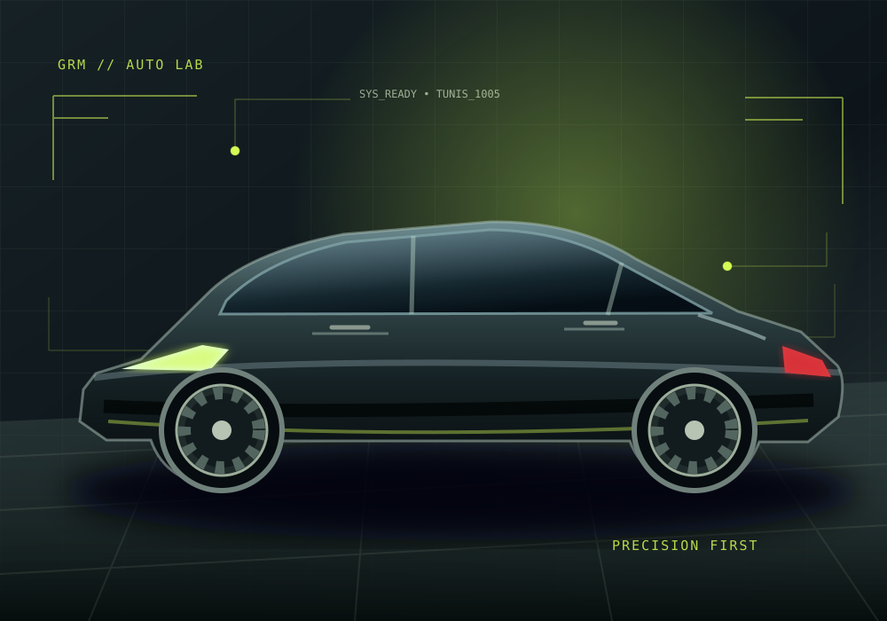
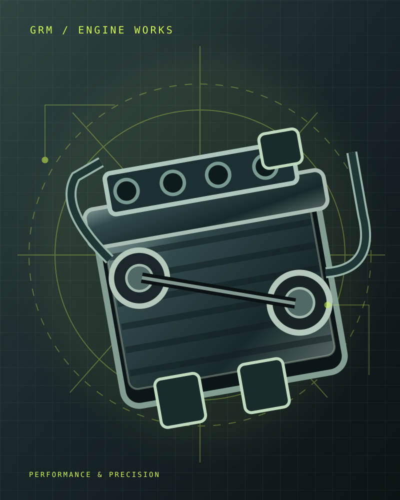
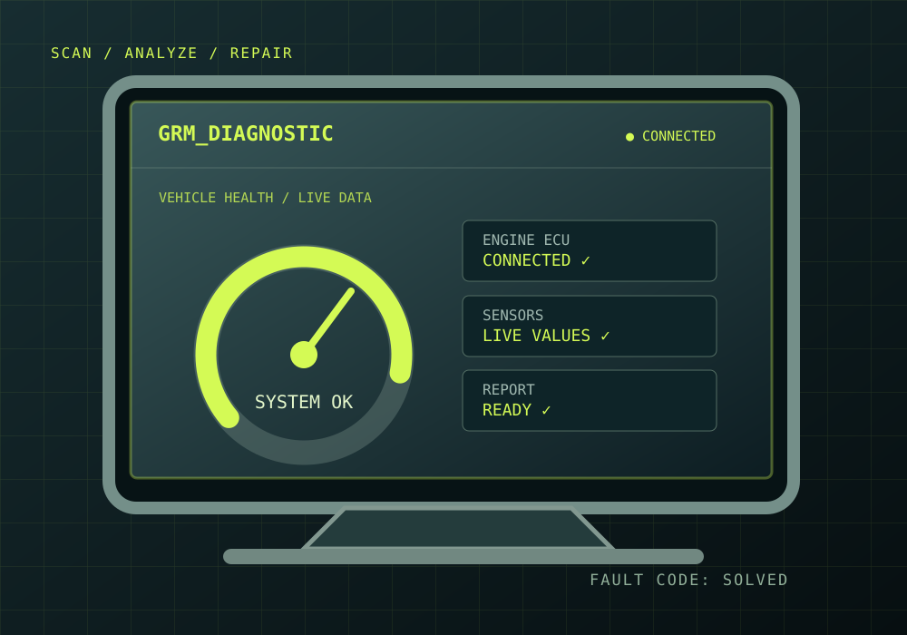

Diagnostic électronique
Recherche de pannes, lecture des calculateurs, voyants moteur, capteurs et systèmes embarqués.
Demander un devisVOTRE GARAGE AUTOMOBILE À TUNIS
Un diagnostic juste. Un travail soigné. Des conseils honnêtes. Confiez votre véhicule à une équipe qui aime vraiment la mécanique.

CE QUE NOUS FAISONS
De la panne difficile à l'entretien du quotidien, des interventions pensées pour reprendre la route en toute confiance.
Recherche de pannes, lecture des calculateurs, voyants moteur, capteurs et systèmes embarqués.
Demander un devisMoteur, embrayage, transmission, freinage, suspension, direction et réparations mécaniques.
Demander un devisVidange, filtres, courroies, niveaux, vérifications et entretien régulier de votre véhicule.
Demander un devisPréparation mécanique et accompagnement de projets automobiles selon vos besoins.
Demander un devisInspection des points essentiels et diagnostic pour acheter votre prochaine voiture sereinement.
Demander un devisUn regard technique pour vous orienter lors de l'achat ou de la vente d'un véhicule d'occasion.
Demander un devis
LA PASSION DU MÉTIER
Chez GRM Garage Rezgui Mohamed, chaque véhicule mérite une vraie recherche de la cause, pas simplement un remplacement de pièces.
Notre approche : écouter, diagnostiquer, expliquer l'intervention et prendre soin de votre voiture comme si c'était la nôtre.
SUR LE TERRAIN

Illustrations de nos domaines d'intervention. Pour les photos et vidéos réelles du garage, consultez notre page Facebook.
LA PAROLE À NOS CLIENTS
« Un vrai passionné qui connaît son métier. Je lui ai confié mon véhicule pour une intervention délicate et le résultat est irréprochable. »
« Travail propre, efficace et à un prix très raisonnable. Je recommande fortement ce mécanicien. »
« Très bon mécanicien, professionnel et honnête. Il m’a donné des astuces utiles et a pris le temps de bien expliquer. »
PARLONS DE VOTRE VÉHICULE
Décrivez votre besoin. Votre demande s'ouvre directement dans WhatsApp, sans compte ni formulaire compliqué.
OU APPELEZ-NOUS DIRECTEMENT+216 23 740 708CONTACT & ACCÈS
Besoin d'un diagnostic, d'un conseil ou d'un rendez-vous ? Contactez-nous ou passez au garage.